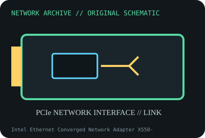

[ MODEL-SPECIFIC NETWORK HARDWARE ]
Intel Ethernet Converged Network Adapter X550-T1
Single-port 10GBASE-T PCIe adapter supporting multigigabit copper links. Confirm exact product label and revision before applying specifications.

IDENTIFICATION: Confirm manufacturer PID, hardware revision, device ID or module suffix. Nominal standards/link rates are not measurements of payload performance.
Exact specifications and compatibility
| Dedicated subcategory | Ethernet adapters |
|---|---|
| Exact product/model | Intel Ethernet Converged Network Adapter X550-T1 |
| Bus, ports and physical interface | PCIe 3.0 x4; one RJ-45 port. |
| PHY, radio or protocol | Intel X550 controller with integrated copper PHY; 10GBASE-T plus lower negotiated rates supported by peer and adapter software. |
| Nominal rate (not measured) | One port up to 10Gb/s nominal. Cable distance and auto-negotiated rate are not throughput measurements. |
| Measured throughput | No measured benchmark is claimed for a physical specimen. A valid result must record host/peer, link partner, media/cable, driver/firmware, traffic pattern, test tool and duration. |
| Drivers, OS and firmware | Intel ixgbe Linux driver; Windows/Windows Server driver and NVM support follow Intel and OEM OS matrices. |
| Compatibility | Requires PCIe x4 electrical lanes; Cat 6A is used for specified 100m 10GBASE-T, shorter Cat 6 channels depend on alien crosstalk. |
| Variant warning | X550-T1 is a single-port retail adapter, not X550-T2 or an OEM board using X550-AT2. Match card P/N, NVM and included bracket. |
Model and revision notes
X550-T1 is a single-port retail adapter, not X550-T2 or an OEM board using X550-AT2. Match card P/N, NVM and included bracket.
Intel ixgbe Linux driver; Windows/Windows Server driver and NVM support follow Intel and OEM OS matrices.
Requires PCIe x4 electrical lanes; Cat 6A is used for specified 100m 10GBASE-T, shorter Cat 6 channels depend on alien crosstalk.
Archival, ESD and preservation notes
Record board/PBA, NVM, MAC, bracket and test cable. Keep heatsink unobstructed; store antistatically and do not touch RJ-45 contacts while energized.
Document source URL, access date, document revision and specimen label/condition. Preserve without credentials or private configuration.
Primary manufacturer and standards sources
- Intel X550-T1 product specificationsPrimary manufacturer or standards documentation; verify exact SKU and host revision.
- Intel Ethernet support and driversPrimary manufacturer or standards documentation; verify exact SKU and host revision.
- IEEE 802.3 Ethernet standardsPrimary manufacturer or standards documentation; verify exact SKU and host revision.
Manufacturer statements cover the named part or its documented product family; the exact labeled revision and vendor compatibility list take precedence.